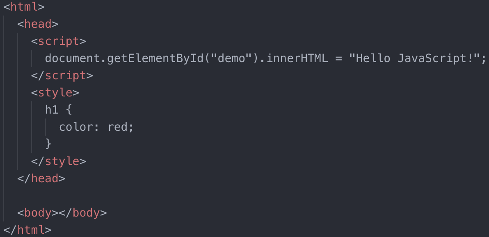
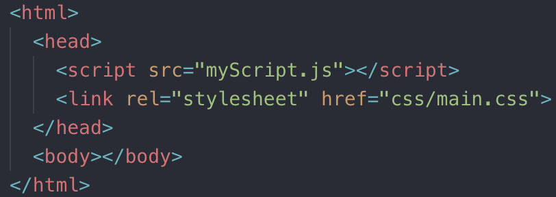

At a Glance
Starting from Scratch:

Alternatively, have your JS and CSS in external files:

Script in Head vs Body
When the browser encounters the script tag, it will block progress on parsing the rest of the HTML on the page as it downloads (if external) the script file and executes it.
In the past, this meant putting script tags at the bottom of the body.
The modern approach is to use async or defer.

While the browser is downloading the script, it is also continuing to parse the HTML. It will execute the script as soon as it is done downloading.
Keep in mind, async scripts are not guarenteed to run in a specific order, and you should not use document.write. Instead, add event listeners:


The browser will download and execute the scripts in order after the document has been loaded.
What makes a website slow?
- Place CSS tags before JavaScript tags: Load CSS before JS because the browser will stop to load the script before CSS can be displayed
- Minify HTML, CSS, and JS: Remove whitespace and new lines to reduce size and speed up load time. Significant for CSS/JS, as this means less data is sent to the client
- Critical CSS: In-line code the CSS needed to load the first display that the user sees, then load non-critical asynchronously (the JS function is a third-party that loads CSS aynchronously):

- Unoptimized Images: Use CSS or SVG instead if possible. JPEG is usually faster (more compressed).
- HTTPS is slower because it's more secure, so browsers allow more options (geolocation, push notifications, etc.)
- Make fewer requests by combining external CSS, JS, etc. files
- Cache-Control: A HTTP header that allows you to cache things (like images, CSS/JS files, etc)
- Prefetching: Tell browser to load other pages in advance after the main one is done, in case the user navigates to it next. (rel="prefetch")
- Use a CDN: Content Delivery Network, edge servers all over the world so a user can fetch content from the one closest to them. Edge servers just store a cache of the pages
etc?
Cache? Promises? Memoization? Closure?
python -m SimpleHTTPServer 3000
SCSS: sass --watch input.scss output.css
Dot Game
https://www.indeed.com/hire/interview-questions/front-end-developer
Write an async queing function that execute functions put in a que. between each function execution, wait 50 mils. (know promise resolution syntax)
Let's Talk Web Design Knowledge
Accessible and User-Friendly
- Check screen width for multiple devices using 12-column Responsive design format
- Tab Order
- Colorblind
Structure your CSS and Javascript for Working with Others
- Organization: Folders, External files, etc.
- Commenting / Documentation